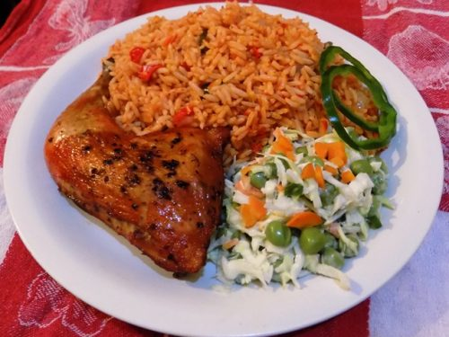

My name is Kalu Chimatara, I am a Nigerian. I love eating a lot, My favourite food is Jellof rice.
I love jellof rice because it's easy to prepare. Jellof rice is a classic Nigerian rice dish flavoured with tomatoes,
peppers and a lot of seasonings. There are many different ways to cook jellof rice. It is a dish made with rice,tomatoes,
tomato paste,onions scotch bonnet peppers, salt and spices. If it dosen't have the above mentioned ingredients,then it's not a true jellof.
Below are the steps used in preparing Nigerian jellof rice.
I love jellof rice because of the nutritional values it has like carbohydrate from rice,protein from the beef,chicken or turkey, it also provide the dish with omega-3 fatty acids and we also have salad for vegetarians that provide them with vitamins and minerals, even the tomato provides vitamins and minerals too.

It is key to use parboiled rice so you don't end up with mushy rice at the end.
When cooking the tomato stew, you can tell when it's done because the oil will rise to the top.
The reason you reserve ¼th of the tomato mixture and add it at the end is because we don't want the rice to burn. Also,it gives the rice that beautiful red colour we all know and love.
There are many other Recipes for your favourite Nigerian Jellof rice, Click on the links below to view them.